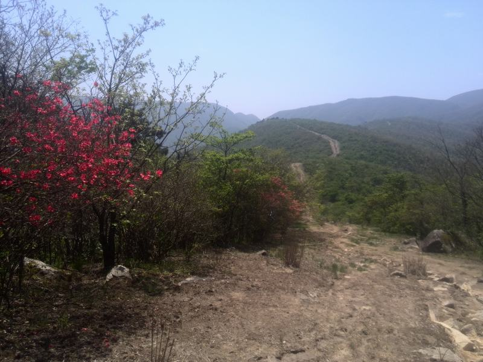

[转寄/推荐][转贴][删除][修改][设置可RE属性][上一篇][返回讨论区][下一篇][回文章][同主题列表][同主题阅读][从这里展开]
发信人: lllxxl (lllxxl), 信区: outdoor
标 题: 七尖那些事儿
发信站: 饮水思源 (2015年05月06日06:35:04 星期三)
三年前的七尖，我跟在松哥身后亦步亦趋地走，只记得自己的疲惫和喘息，无暇关注风景
。到达第二尖龙王峰顶时，看着别人爬上那块两人高的大石头，心生崇敬。
今年，当我自己爬上那块石头，才发现尼玛这竟然是一条不到V0的抱石线，不禁唏嘘不已。
三年前的七尖，第一天中午休息时（请注意我们才走了半天），我发现我的坑爹裤子裆部
开裂了，是的，裆部开裂了，而且我没带备用裤子……
后来瑞雪把她的备用裤子借给了我。那个笑起来像花儿一样明媚的姑娘，是我本科时的同
班同学，协会里的人叫她“雪姐”，叫我“雪哥”。从此“雪姐”成了她的专属称谓。
所以再强调一遍，不要叫我雪姐，或是学姐。
请叫我雪哥。
三年前的七尖，我背着一瓶老干妈上了山，虽然最后作死并成功累成狗，但我的组长兮妹
也因此而敬我是条汉子。后来兮妹去了大日本帝国，在人人上看到我照片后就提醒我要减
肥。我那时不以为然，两个月前突然觉得他的话不无道理。兮妹兮妹，我现在真的听你话
在认真减肥啊。
三年前的七尖，走到某个较难通过的地方，yanhao大吼一声：“让妹子先过！”我喜滋滋
地排在妹子的最后面，准备加入“先过”的队伍。岂知当我前面的妹子都走完后，yanhao
一个箭步提起双杖向前走去，完全无视刚刚提起脚步的我……
唉，我想静静，不要问我静静是谁。
三年前的七尖，小怪兽第一次当领队，按协会传统，我们为他举行了特殊的仪式，这种事
情当然icer是最起劲的。唉，可怜的小怪兽！
今年的七尖，带着对线路模糊的记忆，我一个人来向山峰致敬。当年的你们都各奔东西，
我却并不伤感，因为看到你们的朋友圈里都是秀恩爱的照片，知道你们小日子过得挺滋润
，也还会记得不时地来板上看看。
今年的七尖，有一段路跟岚岚姐和louqichen走在最后面。岚岚姐鞋带散了，于是一伸腿，
跟louqichen说：“鞋带~~”，语气中带着娇嗔和撒娇的意味。然后louqichen（wu nai d
e）俯身帮她系鞋带。
唉，小情侣什么的最讨厌了！
今年的七尖，队伍在下撤中遇到蚂蟥，半数以上皆中枪。我在想，其实蚂蝗也是一条生命
，只不过吸了点血，最终却死于一把盐。它原本在山上吧唧吧唧每天扭两下也是挺欢乐的
，没成想竟在这一天引来杀身之祸，这么想想它也是挺可怜的。人们那么讨厌它，可能根
本原因还是由于它长得丑吧，所以说这终究是一个看脸的世界。唉，想到这里，我就不禁
湿润了眼眶。
以前的我不太愿意对人或事倾注太多感情，大约因为小时候频繁转学习惯了聚散分离，渐
渐就变得淡漠了。只是从这次七尖开始，好像开始有一些转变。因为突然发现，即使是匆
匆过客，也依然值得我用全部的能量去拥抱和热爱。
回首看自己走过的路，峰峦叠翠，山花烂漫。
 screen.width - 200){this.width = screen.width - 200}">
|
[转寄/推荐][转贴][删除][修改][设置可RE属性][上一篇][返回讨论区][下一篇][回文章][同主题列表][同主题阅读][从这里展开]